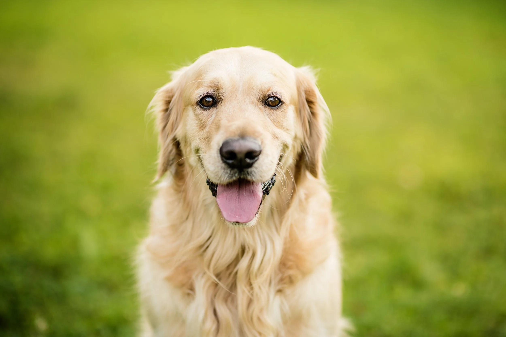
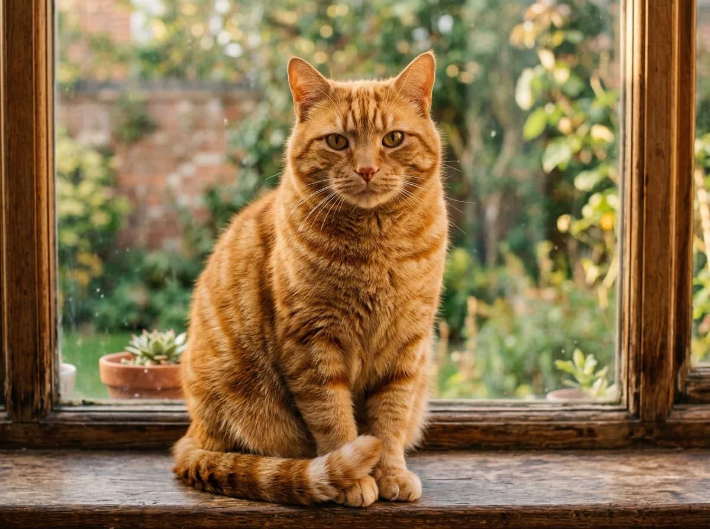
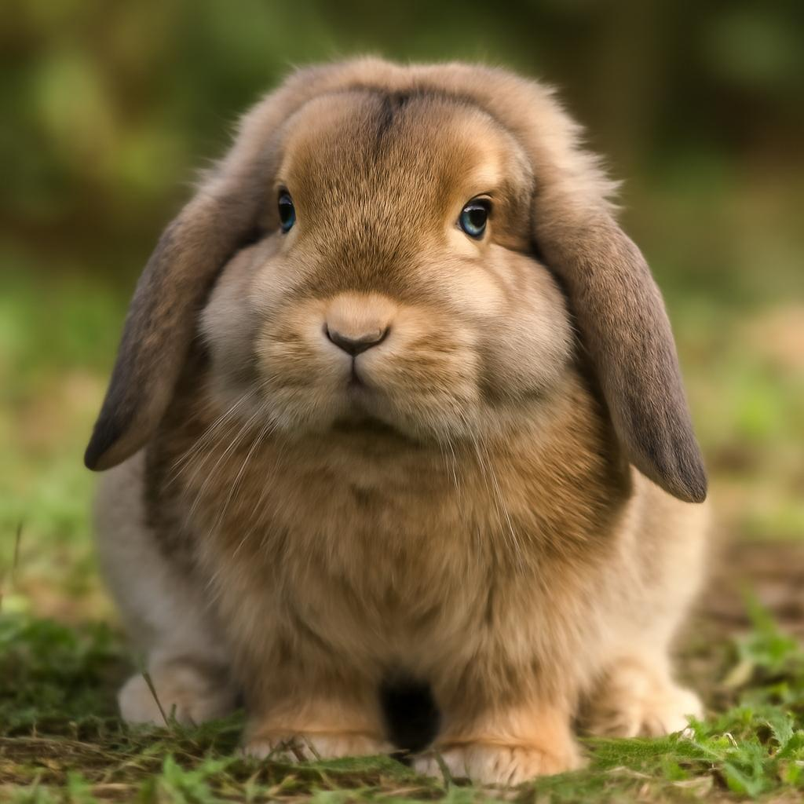

Unsere Tiere suchen ein Zuhause
Du möchtest einem Tier ein liebevolles Zuhause schenken? Dann bist du bei uns genau richtig! Hier stellen wir dir einige unserer tierischen Bewohner vor.

Balu
Hund | 3 Jahre
Balu ist ein freundlicher und verspielter Hund. Er liebt lange Spaziergänge und sucht eine aktive Familie.

Mila
Katze | 2 Jahre
Mila ist eine neugierige und verschmuste Katze. Sie liebt gemütliche Plätze und freut sich über viel Aufmerksamkeit.

Flocke
Kaninchen | 1 Jahr
Flocke ist ein ruhiges und neugieriges Kaninchen. Es sucht ein artgerechtes Zuhause mit mindestens einem passenden Artgenossen.